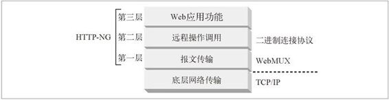

10.3 模块化及功能增强
可以用三个英语单词来描述 HTTP-NG 的主题：“模块化及功能增强”（modularize and enhance）。如图 10-1 所示，HTTP-NG 工作组建议将协议模块化为三层，而不是将连接管理、报文处理、服务器处理逻辑和协议方法全都混在一起。

图 10-1 HTTP-NG 将功能都分散到各层之中实现
第一层，报文传输层（message transport layer），这一层不考虑报文的功能，而是致力于端点间报文的不透明传输。报文传输层支持各种子协议栈（比如无线环境下的协议栈），主要负责处理高效报文传输及处理方面的问题。HTTP-NG 项目组为本层提出了一个名为 WebMUX 的协议。
第二层，远程调用层（remote invocation layer），定义了请求 / 响应的功能，客户端可以通过这些功能调用对服务器资源的操作。本层独立于报文的传输以及操作的精确语义。它只是提供了一种标准的方法来调用服务器上所有的操作。本层试图提供一种像 CORBA、DCOM 和 Jave RMI 那样的面向对象的可扩展框架，而不是 HTTP/1.1 中那种静态的、服务器端定义的方法。HTTP-NG 项目组建议本层使用二进制连接协议（Binary Wire Protocol）。
第三层，Web 应用层（Web application layer），提供了大部分的内容管理逻辑。所有的 HTTP/1.1 方 法（GET、POST、PUT 等 ），以及 HTTP/1.1 首部参数都是在这里定义的。本层还支持其他构建在远程调用基础上的服务，比如 WebDAV。
只要将 HTTP 组件模块化了，就可以对其进行改进，以提供更好的性能和更丰富的特性。